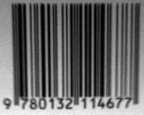
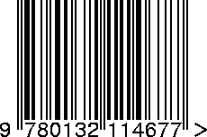
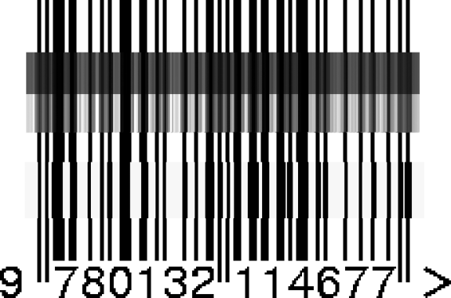

{% include JB/setup %}
{% raw %}
<div>

    <a name="toppage" class="calibre5" id="toppage"></a>
    <table width="100%" border="0" cellspacing="0" cellpadding="0" class="sfbody">
      <tr valign="top" class="calibre6">
        <td class="calibre7">
          <a name="MainContent" class="calibre5" id="MainContent"></a>
          <table width="95%" class="sfbody">
            <tr class="calibre6">
              <td class="v">
                <!--Copyright (c) 2002 Safari Tech Books Online-->
                <table width="100%" border="0" cellspacing="0" cellpadding="2" class="sfbody">
                  <tr class="calibre6">
                    <td valign="middle" class="v1" height="5">
                      
                    </td>
                  </tr>
                  <tr class="calibre6">
                    <td valign="middle" class="v1">
                      <table cellpadding="0" cellspacing="0" border="0" width="100%" class="sfbody">
                        <tr class="calibre6">
                          <td class="v"><span class="calibre9"> </span>
                   
                  <span class="calibre9">   </span>
             <span class="calibre9"> </span></td>
                        </tr>
                      </table>
                    </td>
                    <td class="v1"/>
                    <td valign="middle" class="v2"> 
           
          <span class="calibre9"><a target="_self" href="I_sect112_d1e27766.html" title="Previous section" class="calibre13"></a></span>
				
				 
				
				<span class="calibre9"><a target="_self" href="I_sect112_d1e27986.html" title="Next section" class="calibre13"></a></span></td>
                  </tr>
                </table>
                <div id="section" class="calibre15">
                  <table width="100%" border="0" cellspacing="0" cellpadding="0" class="sfbody1">
                    <tr class="calibre16">
                      <td valign="top" class="v3">Safari IT Books Language Constructs Functional Programming Haskell Safari IT Books Programming Programming Programming Bryan O'Sullivan  Donald Bruce Stewart  John Goerzen  O'Reilly Media, Inc. Real World Haskell, 1st Edition<a name="I_sect112_d1e27934" class="calibre27" id="I_sect112_d1e27934"></a><h3 id="title-IDASISTE" class="docSection1Title">12.7. What Have We Done to Our Image?</h3><a name="x_YU" class="calibre27" id="x_YU"></a><p class="docText">Let's<a name="I_indexterm12_d1e27939" class="calibre27" id="I_indexterm12_d1e27939"></a><a name="I_indexterm12_d1e27940" class="calibre27" id="I_indexterm12_d1e27940"></a><a name="I_indexterm12_d1e27941" class="calibre27" id="I_indexterm12_d1e27941"></a> step back for a moment and
    consider what we did to our image when we converted it from color to
    monochrome. <a class="docLink" href="#blurry_barcode">Figure 12-4</a> shows an image captured from
    a VGA-<span class="docEmphasis">resolution</span> camera. All we've
    done is crop it down to the barcode.</p><a name="blurry_barcode" class="calibre27" id="blurry_barcode"></a><p class="calibre37"><div class="calibre61"><h5 class="docTableTitle">Figure 12-4. Barcode photo, somewhat blurry and dim</h5><a name="I_mediaobject12_d1e27951" class="calibre27" id="I_mediaobject12_d1e27951"></a></div></p><p class="docText"></p><br class="calibre48"/><a name="x_ZU" class="calibre27" id="x_ZU"></a><p class="docText">The encoded digit string, 9780132114677, is printed below
    the barcode. The left group encodes the digits 780132, with 9 encoded in
    their parity. The right group encodes the digits 114677, where the final 7
    is the check digit. <a class="docLink" href="#auto_generated_image">Figure 12-5</a> shows a clean
    encoding of this barcode, from one of the many websites that offers
    barcode image generation for free.</p><a name="auto_generated_image" class="calibre27" id="auto_generated_image"></a><p class="calibre37"><div class="calibre61"><h5 class="docTableTitle">Figure 12-5. Automatically generated image of the same barcode</h5><a name="I_mediaobject12_d1e27963" class="calibre27" id="I_mediaobject12_d1e27963"></a></div></p><p class="docText"></p><br class="calibre48"/><a name="x_aU" class="calibre27" id="x_aU"></a><p class="docText">In <a class="docLink" href="#photographic_generated">Figure 12-6</a>, we've chosen
    a row from the captured image and stretched it out vertically to make it
    easier to see. We've superimposed this on top of the perfect image and
    stretched it out so that the two are aligned.</p><a name="photographic_generated" class="calibre27" id="photographic_generated"></a><p class="calibre37"><div class="calibre61"><h5 class="docTableTitle">Figure 12-6. Photographic and generated images of barcode juxtaposed to
      illustrate the variation in bar brightness and resolution</h5><a name="I_mediaobject12_d1e27975" class="calibre27" id="I_mediaobject12_d1e27975"></a></div></p><p class="docText"></p><br class="calibre48"/><a name="x_bU" class="calibre27" id="x_bU"></a><p class="docText">The luminance-converted row from the photo is in the dark
    gray band. It is low in contrast and poor in quality, with plenty of
    blurring and noise. The paler band is the same row with the contrast
    adjusted.</p><a name="x_cU" class="calibre27" id="x_cU"></a><p class="docText">Somewhat below these two bands is another: this shows the
    effect of thresholding the luminance-converted row. Notice that some bars
    have gotten thicker, others thinner, and many bars have moved a little to
    the left or right.</p><a name="x_dU" class="calibre27" id="x_dU"></a><p class="docText">Clearly, any attempt to find exact matches in an image
    with problems such as these is not going to succeed very often. We must
    write code that's robust in the face of bars that are too thick, too thin,
    or not exactly where they're supposed to be. The widths of our bars will
    depend on how far our book was from the camera, so we can't make any
    assumptions about widths, either.</p>
<a href="21061538.html" class="calibre2"></a><ul class="calibre18"></ul></td>
                    </tr>
                  </table>
                  <table width="100%" border="0" cellspacing="0" cellpadding="2" class="sfbody1">
                    <tr class="calibre16">
                      <td valign="middle" class="v3" height="5">
                        
                      </td>
                    </tr>
                    <tr class="calibre16">
                      <td valign="middle" class="v3">
                        <table cellpadding="0" cellspacing="0" border="0" width="100%" class="sfbody1">
                          <tr class="calibre16">
                            <td class="v5"><span class="calibre33"> </span>
                   
                  <span class="calibre33">   </span>
             <span class="calibre33"> </span></td>
                          </tr>
                        </table>
                      </td>
                      <td class="v3"/>
                      <td valign="middle" class="v6"> 
           
          <span class="calibre33"><a target="_self" href="I_sect112_d1e27766.html" title="Previous section" class="calibre2"></a></span>
				
				 
				
				<span class="calibre33"><a target="_self" href="I_sect112_d1e27986.html" title="Next section" class="calibre2"></a></span></td>
                    </tr>
                  </table>
                  <table width="100%" border="0" cellspacing="0" cellpadding="2" class="sfbody1">
                    <tr class="calibre16">
                      <td valign="top" class="v6">
                        <span class="calibre33"></span>
                      </td>
                    </tr>
                  </table>
                </div>
                <!--IP User 2-->
              </td>
            </tr>
          </table>
        </td>
        <td class="calibre7">
                         
                      </td>
      </tr>
      <tr class="calibre6">
        <td colspan="3" valign="bottom" class="calibre7">
          <br class="calibre20"/>
          <p class="v4"></p>
          <br class="calibre20"/>
        </td>
      </tr>
    </table>
  </div>

{% endraw %}

